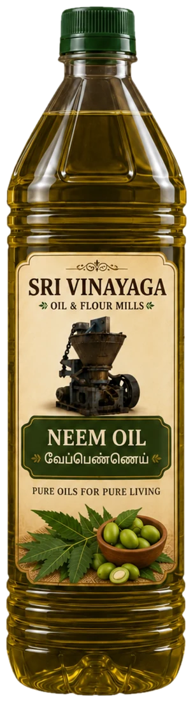

Neem oil pressed in our own mill. Sold in 100 ml, 500 ml and 1 litre bottles.எங்கள் மில்லிலேயே பிழிந்த வேப்ப எண்ணெய். 100 மி.லி, 500 மி.லி மற்றும் 1 லிட்டர் பாட்டில்களில் கிடைக்கும்.
Loading sizes and prices…அளவுகள், விலைகள் ஏற்றப்படுகின்றன…
Usesபயன்பாடுகள்
- Lighting traditional lamps (deepam)பாரம்பரிய விளக்கு ஏற்ற
- External useவெளிப்பூச்சு பயன்பாடு
- Not for consumptionஉட்கொள்ள வேண்டாம்
Why Sri Vinayagaஏன் ஸ்ரீ விநாயகா
- One seed type only: neem, never blendedஒரே வகை விதை: வேம்பு மட்டும், கலப்பில்லை
- Pressed in our own iron cast screw expellerஎங்கள் இரும்பு வார்ப்பு ஸ்க்ரூ எக்ஸ்பெல்லரில் பிழிகிறோம்
- From a small 100 ml bottle to a 1 litre bottleசிறிய 100 மி.லி பாட்டில் முதல் 1 லிட்டர் பாட்டில் வரை
- Packed in the family mill at Thiruvanaikoil, Trichy, running since 19351935 முதல் இயங்கும் குடும்ப மில்லில், திருவானைக்கோவில், திருச்சியில் பாட்டிலிடப்படுகிறது
Storing itசேமிப்பு
Keep in a cool, dry place away from direct sunlight. Close the lid tightly after use.நேரடி சூரிய ஒளி படாத குளிர்ந்த, உலர்ந்த இடத்தில் வைக்கவும். பயன்படுத்திய பின் மூடியை இறுக்கமாக மூடவும்.
Questionsகேள்விகள்
How is this oil made?இந்த எண்ணெய் எப்படி தயாரிக்கப்படுகிறது?
We press neem seed in our own iron cast screw expeller at the mill in Thiruvanaikoil. It is never blended.வேப்ப விதையை திருவானைக்கோவில் மில்லில் எங்கள் இரும்பு வார்ப்பு ஸ்க்ரூ எக்ஸ்பெல்லரில் பிழிகிறோம். கலப்பில்லை.
Can I eat or cook with it?உண்ணவோ சமைக்கவோ பயன்படுத்தலாமா?
No. Neem oil is for external and lamp use only and is not for consumption.வேண்டாம். வேப்ப எண்ணெய் வெளிப்பூச்சு மற்றும் விளக்கு பயன்பாட்டிற்கு மட்டுமே; உட்கொள்ள வேண்டாம்.
Which pack sizes are available?எந்தெந்த அளவுகளில் கிடைக்கும்?
100 ml, 500 ml and 1 litre bottles.100 மி.லி, 500 மி.லி மற்றும் 1 லிட்டர் பாட்டில்கள்.
How long does delivery take?டெலிவரிக்கு எவ்வளவு நாட்கள் ஆகும்?
Delivery takes 2 to 5 working days after dispatch, across Tamil Nadu.அனுப்பிய பின் 2 முதல் 5 வேலை நாட்களில் தமிழ்நாடு முழுவதும் டெலிவரி ஆகும்.
Our other oilsஎங்கள் மற்ற எண்ணெய்கள்
Gingelly Oilநல்லெண்ணெய்Groundnut Oilகடலை எண்ணெய்Coconut Oilதேங்காய் எண்ணெய்Castor Oilவிளக்கெண்ணெய்Lamp Oilதீப எண்ணெய்
Sri Vinayaga Oil & Flour Mills · 120 Vellalar Street, Kondayampettai Agraharam, Thiruvanaikoil, Srirangam, Trichy 620005 · 99658 42548 · Policiesகொள்கைகள்